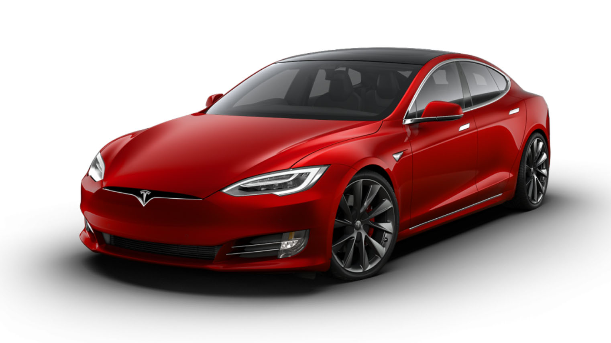
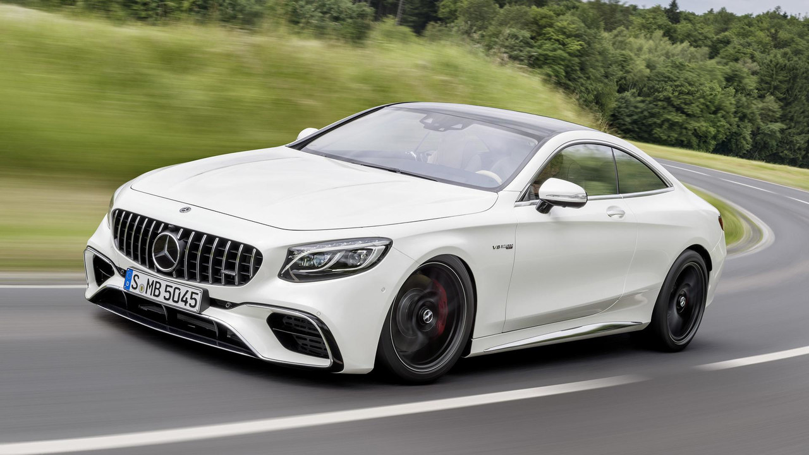
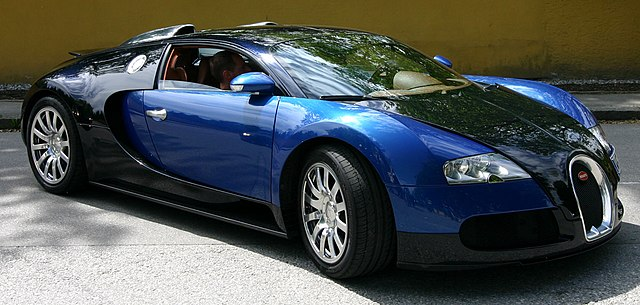
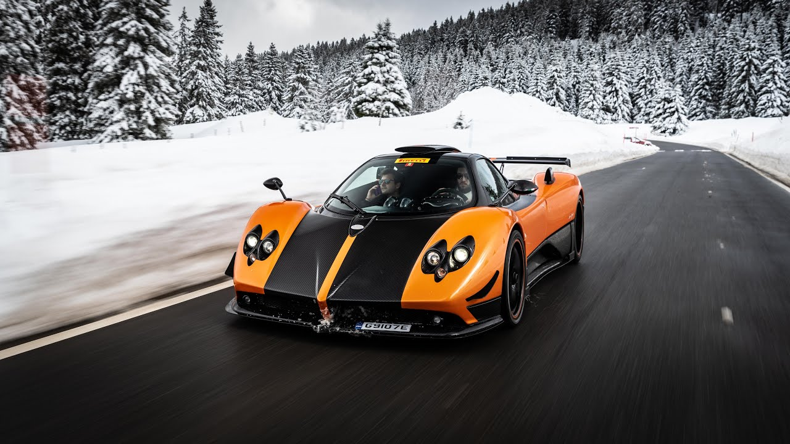
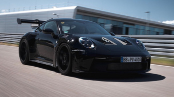
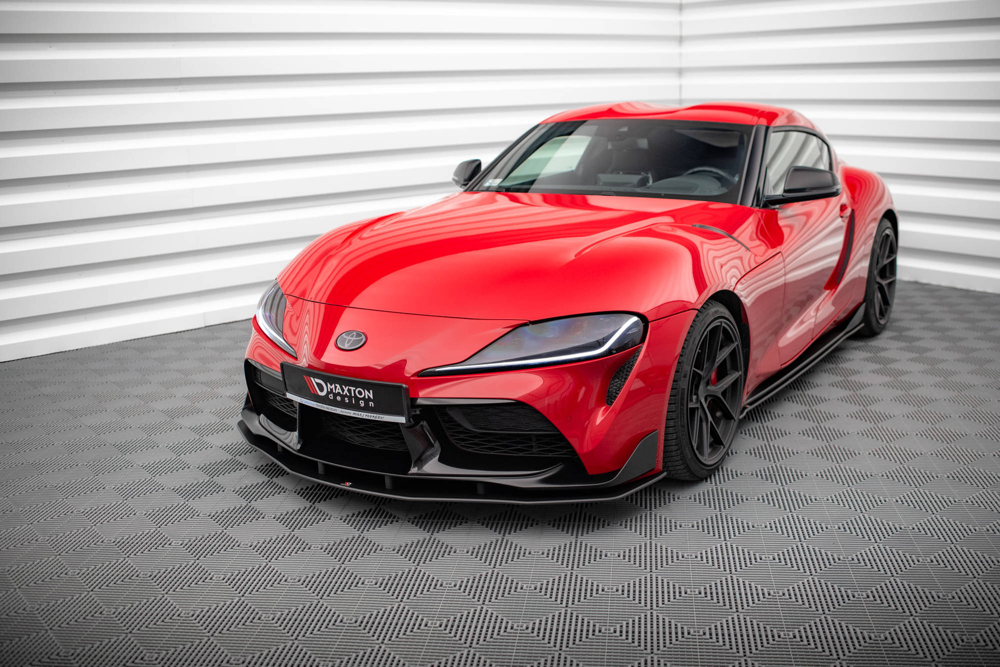
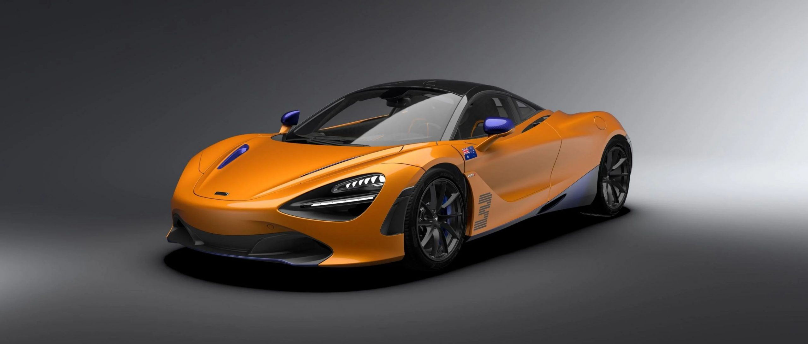

Tesla Model S
A Model S száguldásra és hosszú utakra készült, az elképzelhetetlennél is jobb gyorsulással, páratlan teljesítménnyel és kifinomult dizájnnal.
10.000.000ft
AMG Mercedes S63
A Mercedes-AMG versenybe küldi az új S 63 AMG-t. A luxus-szegmens legerősebb nagyteljesítményű limuzinja új mércét állít fel a menetdinamika, a könnyűépítés és a hatékonyság területén.
7.500.000ft
Bugatti Veyron
A Bugatti Veyron a Volkswagen konszern felügyelete alatt készülő, újkori Bugatti szuperautó, napjaink egyik leggyorsabb, legerősebb közúti autója.
30.000.000ft
Pagani Zonda
Horacio Pagani a Pagani Automobili S.p.A. alapítója és tulajdonosa Argentína észak-keleti részén található Casilda nevű kisvárosban látta meg a napvilágot.
50.000.000ft
Lamborghini Aventador

A Lamborghini Aventador LP700-4 az olasz Lamborghini autógyár egy modellje. A kétüléses sportautót 2011. február 28-án mutatták be a Genfi Autószalonon.
40.000.000ft
Porsche 911 GT3 RS
A Porsche nem egy hétköznapi sportautó. Hanem egy sportautó a hétköznapokra. A közös álmaink határozzák meg a következő 75 évet. Vegye kezébe az irányítást!
60.000.000ft
Toyota Supra NK5
A Toyota által fejlesztett, vadonatúj kézi sebességváltóval a kormánykerék mögött tapasztalható élmény semmihez sem fogható. Az új Toyota GR Supra felejthetetlen élményeket okoz.
25.000.000ft
McLaren 720S
Ez a McLaren Super Series legújabb autója, a McLaren kínálatának legékesebb darabja. A 720S valami új a McLaren számára is, ez ugyanis az első alkalom, hogy a McLaren lecserélt egy autót a kínálatából.
100.000.000ft